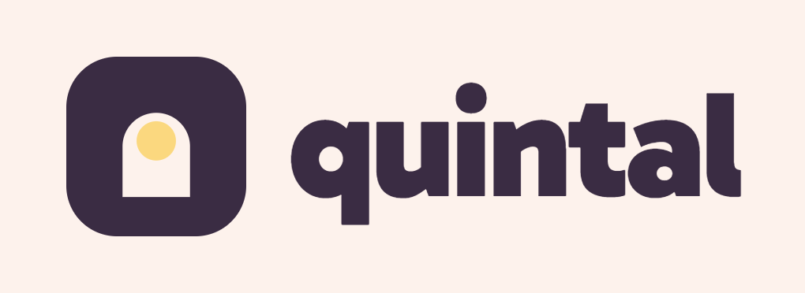

mark

lockup horizontal · claro
lockup · sobre ameixa
O símbolo é um portal com sol: a entrada do quintal e a luz que sempre está lá. Wordmark em Gabarito 900, caixa baixa, tracking -3%. Área de respiro mínima igual à largura do sol. Nunca inclinar, esticar, aplicar sombra ou trocar as cores do par ameixa/manteiga. O símbolo é vetor (SVG); os lockups e o wordmark são PNG 3x renderizados em Gabarito — vetorize o texto antes de impressão.